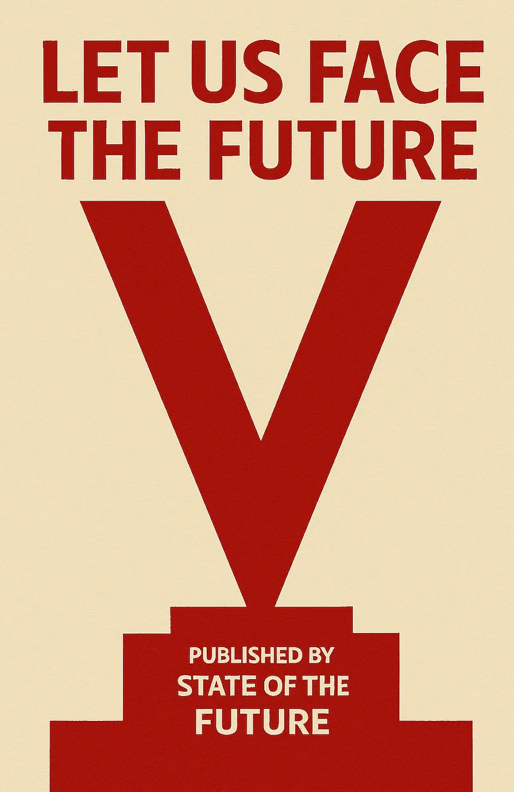

Unbundling the Job
What We Lose When the Job Stops Being the Social Contract

I’m Lawrence, a pleasure. I invest in people making the world better for my children. pre-seed/seed. deep tech/compute ideally. msg: lawrence@lunar.vc. x x
Let Us Face The Future

Since 2008, a series of cascading crises: the financial crisis, wage stagnation, rising house prices, and the climate emergency, have gradually weakened the foundations of the postwar economic settlement. The rise of populism in many countries is basically a response from those who no longer trust or feel supported by existing institutions. And now we throw AI into the mix as it reshapes the labour market through automation and dislocation. Not ideal.
The data will be messy for a while. It will be difficult to draw a clean line between AI and job impact, especially given demographic shifts, COVID recovery, and economic churn. In some areas, AI will create new roles. But it is unlikely that new job creation will keep pace with the speed and scope of automation. The foundational promise: that work would be available, and that work would provide stability, will further break down. The question is no longer just how we protect jobs, but how we support people.
The Bundle Was a Feature, Not a Flaw
In Young People Can’t Get Jobs, Now What, I argued that the institutional path to adulthood, university, graduate role, career progression, mortgage, happiness! is no longer a default. And in Dirty Work, I suggested that manual labour will rise in status as it’s more resistant to automation. What ties these shifts together is a larger structural change. I think it’s this:
The job is no longer the primary vessel for social stability.
For most of the 20th century, a job wasn’t just how you earned money. It was how you became legible to others and more importantly The State. It told The State who you were. It gave you access to healthcare, pensions, unemployment benefits. You didn’t need to negotiate each piece individually. It came bundled. Income, social protection, and professional development were all wrapped into a single institutional form. And for most, with that came: identity. Accountant. Lawyer. VC. Successful person!
This was the job bundle: not just wages, but a structure that offered predictability, progression, and social legibility. Marx, of course, would argue this wasn’t a social good, so much as a more concealed form of domination. But if I know Marx, I know he would not argue with the premise: the job is a bundle.
This wasn’t a *natural* outcome. It was a solution to the complexity of industrial coordination. Firms didn’t just minimise transaction costs, as Coase wrote. They absorbed volatility. Rather than each worker finding their own safety net, training, or pension, companies internalised those costs. In the United States, employer-sponsored healthcare scaled during World War II due to wage caps. In the UK, the 1942 Beveridge Report laid the blueprint for a welfare state that linked full employment to social security. The postwar Attlee government implemented it, creating the National Health Service, national insurance, and pensions, all premised on the assumption that most citizens would be continuously employed.
It’s interesting how deeply this logic embedded itself, so much so that, even today, disentangling welfare from employment feels politically and administratively unnatural. The job wasn’t just a means of earning. It became the access point for citizenship. Not just culturally but legally. In the UK, access to key benefits hinges on passing a Habitual Residence Test or proving economic activity. For many migrants, getting a job remains the clearest route to eligibility.
In white-collar professions, the job structures time, ambition, and belonging. The firm wasn’t just a place to earn. It was the container through which your life progressed. In Japan, this logic was taken to an extreme: lifetime employment in large firms was more than an economic arrangement but a social system. Your employer shaped your housing, marriage prospects, even leisure. Company songs, uniforms, and rotating placements reinforced loyalty to the institution over the individual. While that model has weakened, the idea that the firm is the core unit of social order remains embedded. Work is still the primary vehicle through which a person becomes legible to society.
That model still exists. And for many, especially in sectors that rely on team coordination, physical infrastructure, or high-regulation environments, it will likely persist. It may even deepen in meaning as humans and professions set themselves against AI and AI jobs. But in many domains, especially junior and mid-level digital work, the foundation is starting to shift.
Digital Work Is Where the Unbundling Begins
In Young People Can’t Get Jobs, I wrote that “the system hasn’t collapsed. It’s decaying.” That feels right. But it’s important to be precise about what’s decaying, and what isn’t, yet. As Noah Smith recently pointed out, we do not currently have strong evidence that AI is driving job losses across the economy. Employment remains historically high, and wages continue to rise in many sectors. So the labour market, in aggregate, is holding up.
Still, the effects of AI are showing up at a different level, not in net job destruction, but in how certain kinds of work are being decomposed. Digital roles, especially entry-level ones, are where we see it. Junior positions in marketing, customer service, legal support, research, and software are no longer coherent packages of tasks. They are becoming modular and “promptable”. What disappears first is not the job itself, but its internal scaffolding if you will — the glue work, the learning-by-doing, the apprenticeship layer. In other words, the unbundling has begun not by eliminating roles outright, but by stripping out the low-friction, developmental tasks that once made them coherent.
Think about it: today you will prompt, re-prompt, test a different model, condense, re-write, and prompt again. All of that “process” was once the learn-by-doing work of an apprentice. There is no learning by osmosis or exposure to “seniors”.
Instead of hiring an assistant or analyst, many teams now use LLM-based tooling. Coders rely on Replit (hoping it doesn’t delete your customer database). Marketers use Claude to generate campaign drafts. Legal teams use Harvey to produce contract templates. Customer service is increasingly routed through chatbots trained on company-specific data. None of these developments register in unemployment statistics, but they shift what it means to “start out” in these fields. The job may still exist, but the path into it and upwards is eroding.
The recent METR data shows that leading frontier models improved significantly in multi-step task coherence and instruction-following over just seven months, with coherence scores in complex task chains up by over 30 percent. This suggests that current productivity gains from AI will likely compound, but only within the boundaries of existing workflows. For now, employees become faster at what they were already doing: writing, editing, coding. But that acceleration hits a ceiling.
True step-change productivity will require a reconfiguration of the workflow itself — where tasks are not just sped up, but redefined or eliminated. That’s when unbundling accelerates. The classic example is how early factories initially just replaced steam engines with electric motors but kept the same centralised power distribution system, long belts and shafts running throughout the building from a single power source. This provided some benefits but didn't fundamentally change how work was organized. The real transformation came when factories redesigned around electric motors' unique advantage: you could put individual motors at each workstation. This enabled the assembly line, where work flowed in sequence rather than being centralised around one power source. It also allowed for much more flexible factory layouts since you weren't constrained by the need to distribute mechanical power from a central point.
The parallel to AI is that we're currently in the "electric motor replacing steam engine" phase, where AI tools are being dropped into existing workflows to speed up specific tasks. Use AI to make slides faster, or automate emails, or vibecode. But the real quiz is: why are we even making slides or sending emails or coding? What is the job to be done? Imagine a world in which, we don’t actually make slides at all? Maybe we make a video instead? Or decision-makers just get their agent to make a video by pulling real-time sales data instead of asking “juniors” or consultants to do it?
We’ve sort of seen a version of this shift before. The sharing economy abstracted the task from the role — turning driving, delivery, or hosting into on-demand services performed by legally independent workers. That system created flexibility, but also fractured responsibility. What we’re seeing now in digital solo work is a more empowered version of that model. Individuals have real leverage. With Substack, Stripe, Replit, and Claude, creators can build and sell products alone. Pieter Levels runs a multi-million dollar business with no staff. Developers VibeCode and ship full AI-native apps. They are part of a growing class of independent, AI-augmented workers.
But the same tools that remove the need for an employer also remove the backstops that employment used to provide. Healthcare, income smoothing, training, professional identity — these remain institutionally bound to jobs. Trade unions, tax systems, and the welfare state are still designed around full-time employment. And in much of Europe, self-employment is still more administratively complex than having a job. Try getting a mortgage if you vibecode for a living.
Rebuilding Support Without Rebuilding the Firm
So the job was a post-war bundle and it’s now unbundling. The unbundling won’t happen everywhere, immediately, all at once. We need to go through the “electric motor replacing steam engine" phase first which might take years. But certainly, we should be thinking about what will replace the bundle, so we can prepare.
I have been toying with this idea of “startups for the rest of us”. But, the truth is, most people don’t want to build a business. There is a group of people on the margins who can be persuaded, and we should do that. But for most, they want to make a living with enough security and structure to plan their lives. The opportunity is in using AI not just to increase productivity, but to reduce the administrative burden that comes with independence.
Many of the things that made solo work a nightmare — bookkeeping, contract generation, tax, mainly tax tbh, are now sort of automatable. LLMs can handle a good portion of the glue work done by small accounting firms. And automate website design, payments, customer support. This should unlock a new kind of autonomy.
But autonomy without support is just exposure.
What’s needed is a replacement for the job’s bundle. Not necessarily in a single institution, but as a network of systems. Decentralised if you like. Or composable if you want. Or basically, just services, if you are a normal person. Portable benefits that follow individuals across projects. Legal wrappers that spin up and down as collaborations form. Early signs are visible. In Belgium, SMart acts as an employment proxy for freelancers, smoothing income and handling taxes. In the U.S., Opolis offers health insurance and payroll infrastructure to independent workers. Stripe Atlas and Shopify reduce the cost and complexity of running micro-enterprises. These tools lower friction, but they are still tools.
There is also movement at the edge. DAOs attempted, messily, to encode trust and ownership in programmable ways. More organically, creators are building informal infrastructures. Discord groups that share legal templates, revenue dashboards, and sponsorship rates. Substack is less a publishing platform and more an all-in-one publishing house. Mutual aid funds on Twitch. These are fragile but real. People are already rebuilding the job’s functions one service at a time.
Framing AI automation, augmentation, job loss, etc around the broader vision of supporting people not protecting jobs is the answer. It’s how we support economic growth and support citizens. You cannot just let it rip and hope the welfare state can absorb the consequences. You will be voted out at the next election. You also cannot protect jobs through legislation and hope to achieve economic growth.
If I were the Labour Government in the UK, or a centre-left Government anywhere in the world, I would be thinking about how to begin making this clearer to the public. The Government should probably not be advocating for Discord over DWP. But if we accept the idea that the job bundle is no longer the stable pathway to legibility, then we need to think about what comes next?
We need a new Beveridge Report to pull these ideas together, not just as a policy fix, but as a vision for the country. The job bundle is coming apart, so let’s tell a positive story of what could replace it. The postwar settlement promised protection through employment. The next settlement might promise something bolder: liberation from the tyranny of the office job, paired with the dignity of meaningful work and economic security. Not the gig economy's false freedom. Not universal basic income as consolation prize for obsolescence. But protection through freedom. Sovereignty with AI characteristics.
Let Us Face The Future Together.